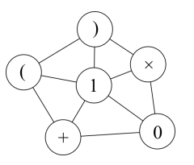

在一个 $N$ 个节点的无向图（没有自环、重边）上，每个点都有一个符号，可能是数字，也可能是加号、减号、乘号、除号、小括号。你要在这个图上数一数，有多少种走恰好 $K$ 个节点的方法，使得路过的符号串起来能够得到一个算数表达式。路径的起点和终点可以任意选择。
所谓算数表达式，就是由运算符连接起来的一系列数字。括号可以插入在表达式中以表明运算顺序。
注意，你要处理各种情况，比如数字不能有多余的前导 $0$，减号只有前面没有运算符或数字的时候才可以当成负号，括号可以任意添加（但不能有空括号），$0$ 可以做除数（我们只考虑文法而不考虑语意），加号不能当正号。
例如，下面的是合法的表达式：
-0/0 ((0)+(((2*3+4)+(-5)+7))+(-(2*3)*6))
而下面的不是合法的表达式：
001+0 1+2(2) 3+-3 --1 +1 ()
第一行三个整数 $N,M,K$，表示点的数量，边的数量和走的节点数。
第二行一个字符串，表示每个点的符号。
接下来 $M$ 行，每行两个数，表示一条边连的两个点的编号。
输出一行一个整数，表示走的方法数。这个数可能比较大，你只需要输出它模 $1000000007$ 的余数即可。
6 10 3 )(1*+0 1 2 1 3 1 4 2 3 3 4 2 5 3 5 3 6 4 6 5 6
10
对于所有数据，$1\leq N \leq 20,\ 0 \leq M \leq \frac{N(N-1)}{2},\ 0 \leq K \leq 30$。
【样例说明】

一共有十条路径，构成的表达式依次是
101 (1) 1+1 1+0 1*1 1*0 0+0 0+1 0*0 0*1
 Comet OJ
Comet OJ